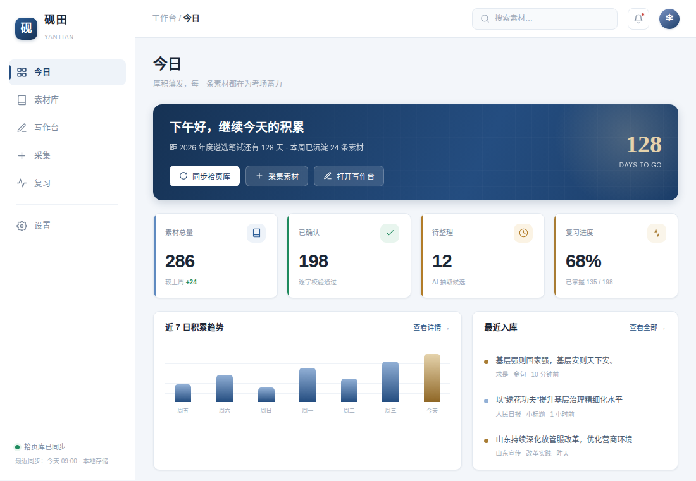
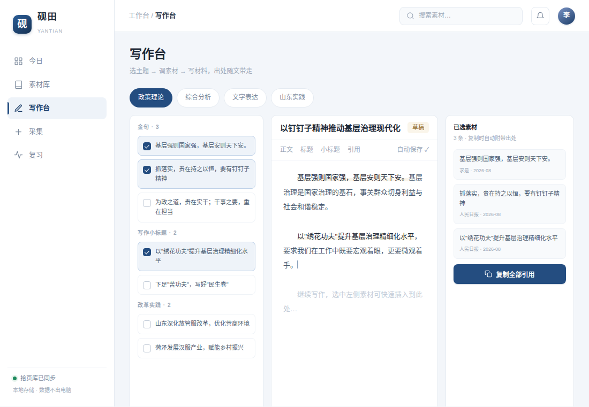
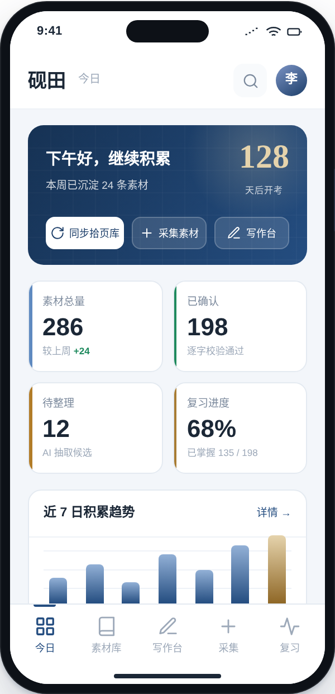
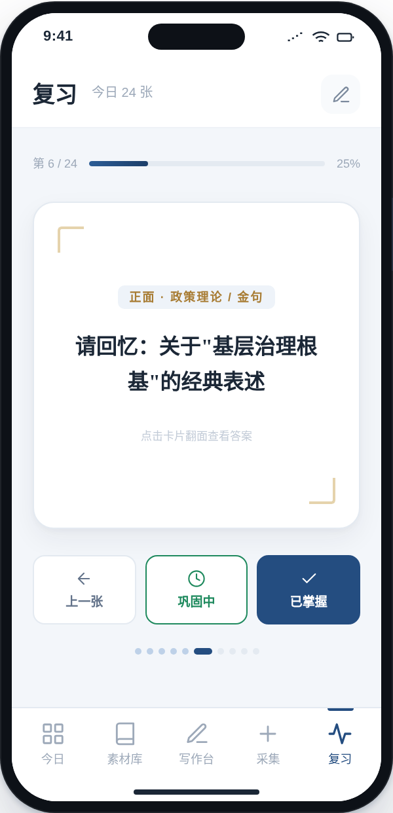

面向体制内遴选备考的写作素材知识库。从人民日报、求是、半月谈等优质来源采集金句与小标题，结构化沉淀为可追溯素材，写作时精准调取，复习中稳步内化——打通「采集 → 沉淀 → 调取 → 内化」的完整闭环。
墨蓝 + 暖金的沉静视觉，克制而专注，呼应慢读与深思的备考节奏
拾页联动抓取原文，AI 候选抽取后逐字校验、人工确认，出处可追溯，杜绝误引。
SQLite FTS5 中文子串检索，主题素材包一键聚合，写作台带出处引用随时取用。
翻卡式复习，按掌握度排序「待巩固优先」，让素材真正转化为考场上的表达。
桌面三栏工作台与移动端单列布局共用一套设计令牌，通勤速记与深度写作无缝衔接。
以下为高保真预览缩略图，点击进入设计方案查看全部细节




设计令牌 · 核心组件 · 桌面五屏 · 移动五屏 · 设计原则